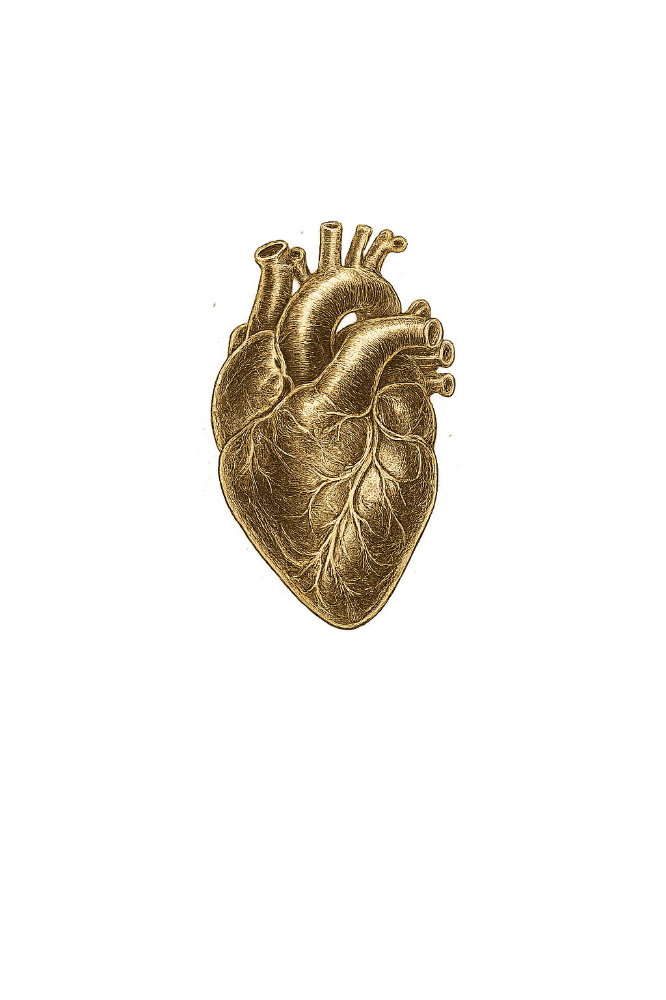

Boa noite, Rebeca 🌙
Sua missão de hoje
Revisar Sepse
Farmacologia IIFoque no essencial e avance com consistência.
Você vai se orgulhar do seu progresso.

Ferramentas de estudo
Flashcards
Revise conteúdos com repetição espaçada e ganhe retenção máxima.
Casos ClínicosResolva casos reais e desenvolva seu raciocínio clínico na prática.
Mapas MentaisOrganize ideias e conecte conceitos de forma visual e intuitiva.
QuestõesTeste seus conhecimentos com questões de provas e acompanhe seu nível.
Simulador de AnamneseTreine entrevistas clínicas com simulação realista e feedback inteligente.
Explique pro ProfessorTire dúvidas e receba explicações claras como se fosse na prática.
Continue de onde parou
Farmacologia II
Mecanismo dos AINEs
Organização
Seu progresso
--
Taxa de acerto
--
Revisões feitas
--
A revisar agora
--
Provas em 7 dias
Evolução
Notas por matéria
Lance notas em Notas para ver a evolução aqui.
Flashcards criados (acumulado)
Crie flashcards em Flashcards para ver a evolução aqui.